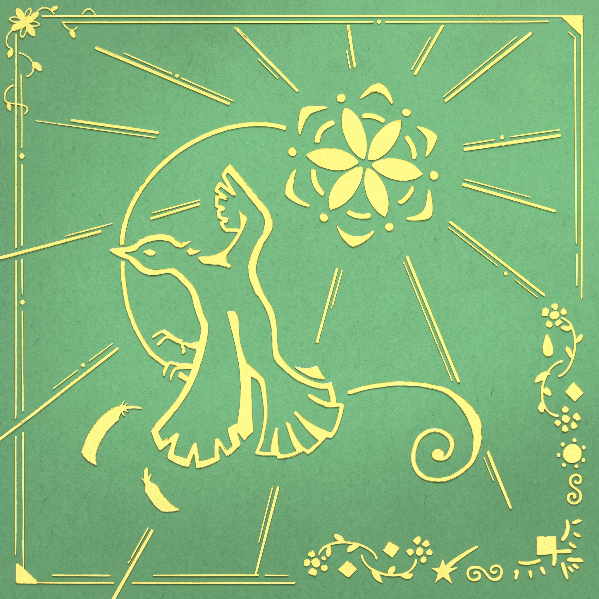

หากฉันมีปีกเพื่อจะบินขึ้นไปต้องรอลมใดบอกเป็นสัญญาณกี่ฤดูกาลกว่าดอกไม้จะบานโปรดตะวันส่องทางยามเมื่อถึงเวลาไม่รู้ว่าเมื่อไรกว่าจะถึงเส้นชัยกี่บันดาลใจก่อเป็นเชื้อไฟเก็บวันและคืนที่ทนฝืนยืนใหม่ให้เป็นความหมายยามเมื่อได้มันมาEh เมื่อฝนโปรยปรายปกคลุมหนทางEh เมื่อฟ้าสว่าง ฉันเห็นหนทางจะรอให้พายุพัดผ่านไป จะรอดวงใจเราได้โบยบินไปเมื่อวันของเรามาถึงเมื่อไหร่โปรดตะวันส่องทางให้ทีหากฉันเป็นนกก็รอวันบิน เป็นดอกไม้ก็รอวันบานรอเพียงฤดูกาล สักวันจะเป็นของเรา
Oh uh woh oh woh oh weh Oh uh woh oh woh oh wehวอนดวงดาวดวงที่ร่วงลงมาจะดลบันดาลฝนจนหมดฟ้าเปิดทางเราเดินคืนชีวิตชีวาให้ฟ้าสว่าง ให้เห็นหนทางก็เพราะว่ามันยาวไกลจะหลงทางไปก็ไม่เป็นไรยังคงมีเจ้าดวงดาวจะคอยบอกเราให้ไปทางไหนและแม้ไม่รู้ว่ามันจะยากเท่าไหร่เจอพายุลูกใหญ่เราจะผ่านพ้นไปจะรอให้พายุพัดผ่านไป จะรอดวงใจเราได้โบยบินไปเมื่อวันของเรามาถึงเมื่อไหร่ โปรดตะวันส่องทางให้ทีหากฉันเป็นนกก็รอวันบิน เป็นดอกไม้ก็รอวันบานรอเพียงฤดูกาล สักวันจะเป็นของเราOh uh woh oh woh oh weh Oh uh woh oh woh oh weh Oh uh woh oh woh oh weh Oh uh woh oh woh oh weh จะรอให้พายุพัดผ่านไป จะรอดวงใจเราได้โบยบินไปเมื่อวันของเรามาถึงเมื่อไหร่ โปรดตะวันส่องมายามเมื่อถึงเวลาจะรอให้พายุพัดผ่านไป จะรอดวงใจเราได้โบยบินไปเมื่อวันของเรามาถึงเมื่อไหร่ โปรดตะวันส่องทางให้ทีแม้มันยากเพียงใดเราจะไม่เป็นไรจะถนอมดวงใจไม่ว่านานเท่าไรให้ช่วงเวลาที่จะได้มันมาจะเป็นวันที่เราคู่ควรหากฉันเป็นนกก็รอวันบิน เป็นดอกไม้ก็รอวันบานรอเพียงฤดูกาล สักวันจะเป็นของเราOh uh woh oh woh oh weh Oh uh woh oh woh oh wehหากฉันเป็นนกก็รอวันบิน เป็นดอกไม้ก็รอวันบานรอเพียงฤดูกาล สักวันจะเป็นของเรา
อยากรู้จัดคุณพาทีมากขึ้นติดต่อได้ที่ กลับไปด้านบน ฟังเพลงได้ที่นี่